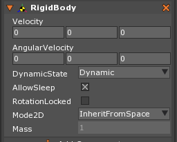

RigidBody
A rigid body is a body that cannot be deformed. That is to say, no matter what force is applied to it, the shape of the rigid body will remain the same. While perfectly rigid bodies do not exist in real life, most objects behave close enough to perfectly rigid. This also allows Physics to make reasonable assumptions and optimizations. The RigidBody component is Zero’s implementation of this model.
Common Uses
- Allows forces and velocity to move the object on which it is attached.
- Gives mass and velocity properties to an object.
- Gets the center of mass of an object composition.
Using the RigidBody Component
Adding the RigidBody component to an object allows Zero’s Physics engine to manage physical properties of that object. Specifically, the RigidBody component allows an object to be set to three different DynamicStates: Static, Kinematic, and Dynamic. When set to Dynamic, the movement of the object may be governed by forces, impulses, and velocities.
In Zilch, RigidBody provides access to linear and angular velocity, as well as several other physical properties of an object. It also provides access to the mass and inertia of the object derived from the material density and the volume of the associated :cpp:type:Colliders<Collider>`.
The RigidBody component has a dependency on Transform. When added to an object, the properties of the RigidBody are revealed in the Property window, as shown here:

RigidBodyDynamicState
Of all the properties of RigidBody, the DynamicState property will cause the most dramatic changes in behavior of the object. The most notable behavior change being how each type of RigidBody handle collision detection and resolution with the other types of RigidBodies. Certain RigidBody types will or will not detect and/or resolve collision depending on the type of the other RigidBody in the collision.
The three DynamicStates and their functions are as follows:
- DynamicState
Dynamic:The default for theRigidBody, this object is governed by and subject to all forces and physical properties within the Physics engine. The will detect and resolve their collisions with every other type ofRigidBody.Static:The setting that tells the Physics engine the object is incapable of moving (except by Translation), greatly improving performance. They have infinite mass and therefore are not affected by force or velocity. They will detect collision with Dynamic and KinematicRigidBodies, but not other StaticRigidBodies; they do not resolve collision with any RigidBodies.Kinematic:KinematicRigidBodieshave infinite mass and therefore are not affected by force or velocity (they can only be moved by setting the object’s Translation). They will detect but not resolve collision with any other type ofRigidBody. However, Dynamic will resolve with Kinematic, while Static will not.
Sleeping RigidBodies
Sleeping is an optimization that detects when an object is not moving, ceasing all communication with that object. However, this may cause undesired behavior through implementation of logic, usually because of those things which will not “wake up” an object, such as forces. For example, if a player character (who has been allowed to sleep) is being controlled through a force-based player controller and the player stops providing input for a moment, when the player provides more input, the player character will not move. The input from the player, which applies forces to the player character, is not sufficient to wake the player character up.
RigidBody has an ``AllowSleep` property that will keep an object from sleeping. In Zilch, there are functions that allow the user to force objects to sleep or wake. These may be found in the RigidBody Code Reference.
Mode 2D/3D
When a RigidBody is set to Mode2D, it will behave as if it is locked to the xy-plane, only allowing rotation on the z-axis and keeping velocity/forces from translating the object on the z-axis. By default, an object will operate in 2D or 3D based upon the setting in the PhysicsSpace, allowing one to easily change the mode of the entire space. Note, however, that individual objects can still be set to 2D or 3D as desired.
The Mode2D property, when set to Mode2D causes an object to act as if it were 2D, as far as the physics engine in concerned. Specifically, when set to Mode2D, the physics engine will not move an object on the z-plane and will only allow for rotation around the world’s z-axis. One caveat is that the object can still be translated and rotated manually (on the z-axis or otherwise). Individual objects may be set to Mode2D, Mode3D, or, as is the default option on the RigidBody component, inherits one or the other from the space in which the object exists.